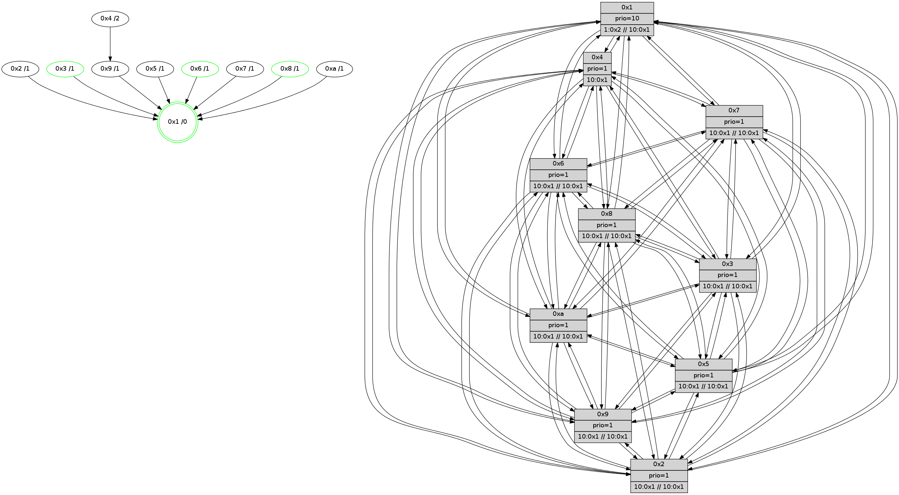

>> << IDX [start] -100 -25 -5 +0 +5 +25 +100 [530.052610159]
 Previous packets
----------------------------------------------------------------------
525.323824 beacon01(faad) #0 coord=01,02,03,04,05,06,07,0a,09,08 cycle=688.0ms assoc
-- color-indic=1 64 8b 56
525.333807 beacon02(faad) #0 coord=01,02,03,04,05,06,07,0a,09,08 cycle=688.0ms assoc 64 18 67
525.353808 beacon04(faad) #0 coord=01,02,03,04,05,06,07,0a,09,08 cycle=688.0ms assoc 64 15 c0
525.363809 beacon05(faad) #0 coord=01,02,03,04,05,06,07,0a,09,08 cycle=688.0ms assoc 64 6f 8d
525.373808 beacon06(faad) #0 coord=01,02,03,04,05,06,07,0a,09,08 cycle=688.0ms assoc 64 e1 5a
525.383809 beacon07(faad) #0 coord=01,02,03,04,05,06,07,0a,09,08 cycle=688.0ms assoc 64 9b 17
525.393812 beacon0a(faad) #0 coord=01,02,03,04,05,06,07,0a,09,08 cycle=688.0ms assoc 64 ea 1c
525.403813 beacon09(faad) #0 coord=01,02,03,04,05,06,07,0a,09,08 cycle=688.0ms assoc 64 64 cb
525.413815 beacon08(faad) #0 coord=01,02,03,04,05,06,07,0a,09,08 cycle=688.0ms assoc 64 1e 86
525.426553 [Hello(7): seq=338 sym=2,3,5,6,4,8,9,10,1 sysInfo= stat=2:8,2,8,6/3:2,2,7,5/5:2,3,8,6/6:0,3,1,2/4:15,3,7,4/8:2,6,7,2/9:3,2,7,5/10:4,2,7,2/1:6,0,8,0]
525.429283 [Color(3) seq=18 @0:0 prio=1 >10.@1,1.@2,1.@4,1.@5 >>10.@1,1.@2,1.@3]
525.431241 [Hello(1): seq=247 sym=4,2,9,5,10,3,8,6,7 sysInfo=coloring-mode-on,ColoringModeRequestCalled stat=4:10,11,8,5/2:5,9,8,6/9:4,9,9,4/5:0,10,7,5/10:7,12,6,2/3:7,13,9,6/8:10,12,11,3/6:10,1,11,3/7:5,14,11,4]
525.434207 [Color(8) seq=18 @0:0 prio=1 >10.@1,1.@2,1.@3,1.@4 >>10.@1,1.@2,1.@3]
525.436302 [STC(1) #0.18 tree-change,stable,to-color d=0]
525.437534 [Hello(6): seq=338 sym=2,3,5,4,7,9,8,10,1 sysInfo=coloring-mode-on,ColoringModeIndicationCalled stat=2:5,5,7,4/3:8,6,6,3/5:7,5,6,5/4:8,6,5,3/7:12,11,5,1/9:6,7,7,4/8:2,4,6,3/10:4,4,8,2/1:7,0,10,0]
525.440360 [Color(6) seq=18 @0:0 prio=1 >10.@1,1.@2,1.@3,1.@4 >>10.@1,1.@2,1.@3]
----------------------------------------------------------------------
526.111955 beacon01(faad) #0 coord=01,02,03,04,05,06,07,0a,09,08 cycle=688.0ms assoc
-- color-indic=1 64 37 53
526.121938 beacon02(faad) #0 coord=01,02,03,04,05,06,07,0a,09,08 cycle=688.0ms assoc 64 a4 62
526.131938 beacon03(faad) #0 coord=01,02,03,04,05,06,07,0a,09,08 cycle=688.0ms assoc 64 de 2f
526.141940 beacon04(faad) #0 coord=01,02,03,04,05,06,07,0a,09,08 cycle=688.0ms assoc 64 a9 c5
526.151938 beacon05(faad) #0 coord=01,02,03,04,05,06,07,0a,09,08 cycle=688.0ms assoc 64 d3 88
526.161938 beacon06(faad) #0 coord=01,02,03,04,05,06,07,0a,09,08 cycle=688.0ms assoc 64 5d 5f
526.171939 beacon07(faad) #0 coord=01,02,03,04,05,06,07,0a,09,08 cycle=688.0ms assoc 64 27 12
526.181944 beacon0a(faad) #0 coord=01,02,03,04,05,06,07,0a,09,08 cycle=688.0ms assoc 64 56 19
526.191944 beacon09(faad) #0 coord=01,02,03,04,05,06,07,0a,09,08 cycle=688.0ms assoc 64 d8 ce
526.201944 beacon08(faad) #0 coord=01,02,03,04,05,06,07,0a,09,08 cycle=688.0ms assoc 64 a2 83
526.213411 [STC(7)->1 #0.18 tree-change,inconsistent-stability,to-color d=1]
526.214841 [Hello(5): seq=339 sym=7,6,4,3,1,9,10,2 sysInfo= stat=7:3,12,8,2/6:6,14,8,3/4:0,9,4,2/3:0,2,0,0/1:15,11,11,0/9:0,6,6,2/10:10,7,3,1/2:1,7,4,3]
526.217334 [Color(1) seq=19 @0:0 prio=10 >1.@2,1.@3,1.@4,1.@5 >>10.@1,1.@2,1.@3]
526.219442 [STC(5)->1 #0.18 tree-change,inconsistent-stability,to-color d=1]
526.221634 [Hello(9): seq=282 sym=5,2,3,4,7,6,8,10,1 sysInfo= stat=5:3,5,3,5/2:0,8,5,3/3:8,13,3,3/4:9,7,4,3/7:8,12,8,1/6:15,10,6,3/8:4,9,2,0/10:0,4,3,2/1:8,10,11,0]
526.224160 [Hello(4): seq=339 sym=5,7,6,2,3,9,8,10,1 sysInfo= stat=5:10,5,6,4/7:4,12,8,2/6:8,13,7,4/2:3,8,5,4/3:0,10,5,4/9:7,4,2,1/8:4,8,8,2/10:3,6,4,1/1:13,12,13,0]
526.226820 [TreeStatus(7)-.->1 #0.18 tree-change,inconsistent-stability child=1]
526.229190 [Hello(3): seq=339 sym=1,7,6,2,4,8,9,10,5 sysInfo=coloring-mode-on,ColoringModeIndicationCalled stat=1:10,13,12,0/7:11,13,6,2/6:2,13,6,4/2:1,6,4,5/4:6,8,4,2/8:0,1,0,0/9:9,5,7,3/10:2,3,1,0/5:6,5,6,3]
526.232004 [STC(3)->1 #0.18 tree-change,stable,to-color d=1]
526.233318 [STC(9)->1 #0.18 tree-change,inconsistent-stability,to-color d=1]
526.234624 [TreeStatus(5)-.->1 #0.18 tree-change,inconsistent-stability child=1]
526.235919 [TreeStatus(9)-.->1 #0.18 tree-change,inconsistent-stability child=1]
526.237199 [Hello(8): seq=282 sym=5,2,3,4,7,6,9,10,1 sysInfo=coloring-mode-on,ColoringModeIndicationCalled stat=5:5,5,5,4/2:15,7,5,4/3:13,8,5,5/4:4,8,5,3/7:4,10,8,3/6:10,15,9,4/9:6,6,6,3/10:1,5,2,2/1:7,14,12,0]
526.240596 [Hello(2): seq=336 sym=4,5,7,6,3,9,8,10,1 asym= sysInfo=hasWarning stat=4:3,7,4,1/5:4,5,4,3/7:1,14,8,2/6:6,15,7,3/3:15,11,4,2/9:7,3,3,1/8:0,1,0,0/10:3,5,0,0/1:12,10,10,0]
526.245324 [STC(2)->1 #0.18 to-color d=1]
526.248024 [Hello(10): seq=271 sym=6,3,2,8,9,5,7,4,1 sysInfo= stat=6:10,15,7,3/3:1,10,6,4/2:10,7,4,5/8:15,11,7,2/9:9,6,6,3/5:4,5,5,4/7:5,13,7,2/4:2,9,4,4/1:3,13,11,0]
526.250537 [STC(8)->1 #0.18 tree-change,stable,to-color d=1]
526.254497 [STC(10)->1 #0.18 tree-change,inconsistent-stability,to-color d=1]
526.256785 [TreeStatus(10)-.->1 #0.18 tree-change,inconsistent-stability child=1]
----------------------------------------------------------------------
526.900087 beacon01(faad) #0 coord=01,02,03,04,05,06,07,0a,09,08 cycle=688.0ms assoc
-- color-indic=1 64 f3 5d
526.910068 beacon02(faad) #0 coord=01,02,03,04,05,06,07,0a,09,08 cycle=688.0ms assoc 64 60 6c
526.920070 beacon03(faad) #0 coord=01,02,03,04,05,06,07,0a,09,08 cycle=688.0ms assoc 64 1a 21
526.930070 beacon04(faad) #0 coord=01,02,03,04,05,06,07,0a,09,08 cycle=688.0ms assoc 64 6d cb
526.940071 beacon05(faad) #0 coord=01,02,03,04,05,06,07,0a,09,08 cycle=688.0ms assoc 64 17 86
526.950071 beacon06(faad) #0 coord=01,02,03,04,05,06,07,0a,09,08 cycle=688.0ms assoc 64 99 51
526.960070 beacon07(faad) #0 coord=01,02,03,04,05,06,07,0a,09,08 cycle=688.0ms assoc 64 e3 1c
526.970074 beacon0a(faad) #0 coord=01,02,03,04,05,06,07,0a,09,08 cycle=688.0ms assoc 64 92 17
526.980076 beacon09(faad) #0 coord=01,02,03,04,05,06,07,0a,09,08 cycle=688.0ms assoc 64 1c c0
526.990077 beacon08(faad) #0 coord=01,02,03,04,05,06,07,0a,09,08 cycle=688.0ms assoc 64 66 8d
527.001952 [TreeStatus(4)-.->1 #0.18 tree-change,inconsistent-stability child=1]
527.004249 [TreeStatus(3)-.->1 #0.18 tree-change,inconsistent-stability,stable child=1]
527.006036 [Hello(6): seq=339 sym=2,3,5,4,7,9,8,10,1 sysInfo=coloring-mode-on,ColoringModeIndicationCalled stat=2:6,5,8,4/3:9,6,7,3/5:8,5,7,6/4:9,6,5,3/7:13,11,6,2/9:7,7,8,5/8:3,4,7,3/10:5,4,9,3/1:7,1,10,0]
527.013050 [Color(3) seq=19 @0:0 prio=1 >10.@1,1.@2,1.@4,1.@5 >>10.@1,1.@2,1.@3]
527.018147 [Color(8) seq=19 @0:0 prio=1 >10.@1,1.@2,1.@3,1.@4 >>10.@1,1.@2,1.@3]
527.020536 [Hello(7): seq=339 sym=2,3,5,6,4,8,9,10,1 sysInfo= stat=2:9,2,9,6/3:3,3,8,5/5:2,3,8,7/6:1,4,1,2/4:15,3,7,4/8:3,7,8,2/9:3,2,8,6/10:5,2,8,3/1:7,0,9,0]
527.022971 [TreeStatus(2)-.->1 #0.18 tree-change,inconsistent-stability child=1]
----------------------------------------------------------------------
527.688217 beacon01(faad) #0 coord=01,02,03,04,05,06,07,0a,09,08 cycle=688.0ms assoc
-- color-indic=1 64 4f 58
527.698199 beacon02(faad) #0 coord=01,02,03,04,05,06,07,0a,09,08 cycle=688.0ms assoc 64 dc 69
527.708200 beacon03(faad) #0 coord=01,02,03,04,05,06,07,0a,09,08 cycle=688.0ms assoc 64 a6 24
527.718201 beacon04(faad) #0 coord=01,02,03,04,05,06,07,0a,09,08 cycle=688.0ms assoc 64 d1 ce
527.728199 beacon05(faad) #0 coord=01,02,03,04,05,06,07,0a,09,08 cycle=688.0ms assoc 64 ab 83
527.738201 beacon06(faad) #0 coord=01,02,03,04,05,06,07,0a,09,08 cycle=688.0ms assoc 64 25 54
527.748200 beacon07(faad) #0 coord=01,02,03,04,05,06,07,0a,09,08 cycle=688.0ms assoc 64 5f 19
527.758207 beacon0a(faad) #0 coord=01,02,03,04,05,06,07,0a,09,08 cycle=688.0ms assoc 64 2e 12
527.768205 beacon09(faad) #0 coord=01,02,03,04,05,06,07,0a,09,08 cycle=688.0ms assoc 64 a0 c5
527.778204 beacon08(faad) #0 coord=01,02,03,04,05,06,07,0a,09,08 cycle=688.0ms assoc 64 da 88
527.789998 [Hello(5): seq=340 sym=7,6,4,3,1,9,8,10,2 sysInfo= stat=7:4,12,8,2/6:7,15,8,3/4:0,9,4,3/3:0,3,0,0/1:15,11,11,0/9:0,6,6,3/8:0,1,1,1/10:11,7,4,2/2:2,7,5,3]
527.792438 [Hello(3): seq=340 sym=1,7,6,2,4,8,9,10,5 sysInfo=coloring-mode-on,ColoringModeIndicationCalled stat=1:10,13,12,0/7:12,13,6,2/6:2,13,6,4/2:2,6,5,5/4:6,8,4,3/8:1,2,1,0/9:9,5,8,4/10:3,3,2,1/5:6,5,6,4]
527.794951 [Hello(4): seq=340 sym=5,7,6,2,3,9,8,10,1 sysInfo= stat=5:10,5,6,5/7:5,12,8,2/6:9,14,7,4/2:4,8,6,4/3:0,11,6,4/9:7,4,3,2/8:5,9,9,3/10:4,6,5,2/1:13,12,13,0]
527.805097 [Color(1) seq=20 @0:0 prio=10 >1.@2,1.@3,1.@4,1.@5 >>10.@1,1.@2,1.@3]
527.808333 [Hello(2): seq=337 sym=4,5,7,6,3,9,8,10,1 sysInfo=hasWarning stat=4:3,7,4,1/5:4,5,4,3/7:1,14,8,2/6:6,15,7,3/3:15,11,4,2/9:7,3,3,1/8:0,1,1,0/10:4,5,1,1/1:12,10,10,0]
527.813156 [Hello(10): seq=272 sym=6,3,2,8,9,5,7,4,1 sysInfo= stat=6:11,0,7,3/3:1,11,6,5/2:10,7,4,5/8:15,12,7,2/9:9,6,6,3/5:4,5,5,4/7:6,13,7,2/4:2,9,4,5/1:3,13,11,0]
----------------------------------------------------------------------
528.476348 beacon01(faad) #0 coord=01,02,03,04,05,06,07,0a,09,08 cycle=688.0ms assoc
-- color-indic=1 64 5b 36
528.486330 beacon02(faad) #0 coord=01,02,03,04,05,06,07,0a,09,08 cycle=688.0ms assoc 64 c8 07
528.496330 beacon03(faad) #0 coord=01,02,03,04,05,06,07,0a,09,08 cycle=688.0ms assoc 64 b2 4a
528.506331 beacon04(faad) #0 coord=01,02,03,04,05,06,07,0a,09,08 cycle=688.0ms assoc 64 c5 a0
528.516331 beacon05(faad) #0 coord=01,02,03,04,05,06,07,0a,09,08 cycle=688.0ms assoc 64 bf ed
528.526331 beacon06(faad) #0 coord=01,02,03,04,05,06,07,0a,09,08 cycle=688.0ms assoc 64 31 3a
528.536332 beacon07(faad) #0 coord=01,02,03,04,05,06,07,0a,09,08 cycle=688.0ms assoc 64 4b 77
528.546338 beacon0a(faad) #0 coord=01,02,03,04,05,06,07,0a,09,08 cycle=688.0ms assoc 64 3a 7c
528.556336 beacon09(faad) #0 coord=01,02,03,04,05,06,07,0a,09,08 cycle=688.0ms assoc 64 b4 ab
528.566336 beacon08(faad) #0 coord=01,02,03,04,05,06,07,0a,09,08 cycle=688.0ms assoc 64 ce e6
528.578862 [Hello(1): seq=249 sym=4,2,9,5,10,3,8,6,7 sysInfo=coloring-mode-on,ColoringModeRequestCalled stat=4:11,11,8,5/2:7,9,9,6/9:5,9,10,5/5:1,10,8,6/10:9,12,7,3/3:8,14,10,6/8:11,13,12,3/6:11,3,11,3/7:6,14,12,5]
528.582222 [Hello(6): seq=340 sym=2,3,5,4,7,9,8,10,1 sysInfo=coloring-mode-on,ColoringModeIndicationCalled stat=2:7,5,8,4/3:9,7,7,3/5:9,5,7,6/4:10,6,5,4/7:14,11,6,2/9:7,7,8,5/8:4,5,7,3/10:6,4,9,3/1:7,2,10,0]
528.584678 [Hello(7): seq=340 sym=2,3,5,6,4,8,9,10,1 sysInfo= stat=2:10,2,9,7/3:3,3,8,5/5:3,3,8,7/6:1,4,1,2/4:0,3,7,4/8:4,7,8,2/9:3,2,8,6/10:6,2,8,3/1:7,1,9,0]
528.588883 [Color(8) seq=20 @0:0 prio=1 >10.@1,1.@2,1.@3,1.@4 >>10.@1,1.@2,1.@3]
528.591052 [Color(6) seq=20 @0:0 prio=1 >10.@1,1.@2,1.@3,1.@4 >>10.@1,1.@2,1.@3]
528.595290 [Color(3) seq=20 @0:0 prio=1 >10.@1,1.@2,1.@4,1.@5 >>10.@1,1.@2,1.@3]
----------------------------------------------------------------------
529.264479 beacon01(faad) #0 coord=01,02,03,04,05,06,07,0a,09,08 cycle=688.0ms assoc
-- color-indic=1 64 e7 33
529.274462 beacon02(faad) #0 coord=01,02,03,04,05,06,07,0a,09,08 cycle=688.0ms assoc 64 74 02
529.284460 beacon03(faad) #0 coord=01,02,03,04,05,06,07,0a,09,08 cycle=688.0ms assoc 64 0e 4f
529.294461 beacon04(faad) #0 coord=01,02,03,04,05,06,07,0a,09,08 cycle=688.0ms assoc 64 79 a5
529.304463 beacon05(faad) #0 coord=01,02,03,04,05,06,07,0a,09,08 cycle=688.0ms assoc 64 03 e8
529.314463 beacon06(faad) #0 coord=01,02,03,04,05,06,07,0a,09,08 cycle=688.0ms assoc 64 8d 3f
529.324463 beacon07(faad) #0 coord=01,02,03,04,05,06,07,0a,09,08 cycle=688.0ms assoc 64 f7 72
529.334466 beacon0a(faad) #0 coord=01,02,03,04,05,06,07,0a,09,08 cycle=688.0ms assoc 64 86 79
529.344466 beacon09(faad) #0 coord=01,02,03,04,05,06,07,0a,09,08 cycle=688.0ms assoc 64 08 ae
529.354466 beacon08(faad) #0 coord=01,02,03,04,05,06,07,0a,09,08 cycle=688.0ms assoc 64 72 e3
529.366021 [Hello(3): seq=341 sym=1,7,6,2,4,8,9,10,5 sysInfo=coloring-mode-on,ColoringModeIndicationCalled stat=1:11,14,12,0/7:12,13,6,2/6:2,13,6,4/2:3,6,5,5/4:7,8,4,3/8:2,2,1,0/9:9,5,8,4/10:4,3,2,1/5:6,5,6,4]
529.368974 [Hello(10): seq=273 sym=6,3,2,8,9,5,7,4,1 sysInfo= stat=6:12,1,7,3/3:1,12,6,5/2:10,7,4,5/8:15,13,7,2/9:9,6,6,3/5:4,5,5,4/7:7,13,7,2/4:2,9,4,5/1:4,13,11,0]
529.371726 [Hello(8): seq=284 sym=5,2,3,4,7,6,9,10,1 sysInfo=coloring-mode-on,ColoringModeIndicationCalled stat=5:5,5,5,4/2:0,7,5,4/3:13,9,5,5/4:4,8,5,4/7:5,10,8,3/6:10,0,9,4/9:6,6,6,3/10:2,5,3,3/1:8,15,12,0]
529.375513 [Hello(9): seq=284 sym=5,2,3,4,7,6,8,10,1 sysInfo=hasWarning stat=5:3,5,3,5/2:2,8,6,3/3:8,15,3,3/4:9,7,4,4/7:10,12,8,1/6:1,12,6,3/8:5,11,3,1/10:2,4,4,3/1:9,11,11,0]
529.381443 [STC(1) #0.19 tree-change,inconsistent-stability,stable,to-color d=0]
529.383512 [Hello(5): seq=341 sym=7,6,4,3,1,9,8,10,2 mpr= sysInfo= stat=7:5,12,8,2/6:8,0,8,3/4:1,9,4,3/3:1,4,0,0/1:0,12,11,0/9:1,6,6,3/8:0,2,1,1/10:12,7,4,2/2:3,7,5,3]
529.386072 [Color(1) seq=21 @0:0 prio=10 >1.@2,1.@3,1.@4,1.@5 >>10.@1,1.@2,1.@3]